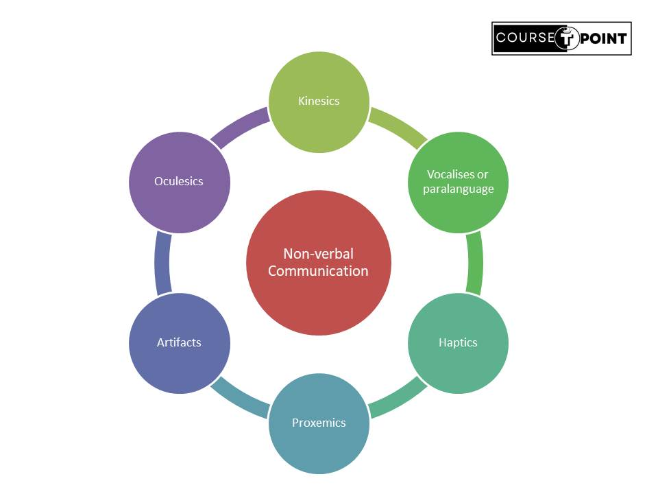

Non-Verbal Communication
| Table Of Content | |
|---|---|
Non-verbal Communication
Non-verbal communication is the process of sending and receiving message without using words, either spoken or written.
Any communication made between two or more persons through the use of facial expressions, hand movements, body language, postures, and gestures is called as Non-Verbal Communication.
Importances
- Well Expression of the speaker's Attitude: Various non-verbal cues of the speaker like physical expression, facial expression etc. play an important role in expressing the inner meaning of the message.
- Conveying message to illiterate people: Non-verbal communication that helps to illiterate person to learn some topics that is not known throught written media.
- Quick expression of message: Non-verbal communication like sign and symbol can also help to communicate some message very quickly than written and oral media.
- Communicate with the handicapped people: Non-verbal communication greatly help in communicating with the handicapped people. for example: The language of communication with the deaf depends on the movement of the hands, fingers, and eyeballs.
- Gaining knowledge about the class of people:Clothing, hairstyle, neatness, jewelry, cosmetics etc convey impression regarding their occupation,age,nationality,social or economic level.
Types of Non-Verbal Communication
- Kinesics(Movement):Kinesics refers to the movement of a body when it communicates
with
other
people.
- Facial Expression: Facial expressions are one of the most recognizable forms of nonverbal communication. They convey emotions such as happiness, sadness, anger, fear, surprise, or disgust. Examples include smiling, frowning, raising eyebrows, or squinting.
- Body posture:Posture refers to the way a person holds their body while standing, sitting, or moving. It can communicate confidence, openness, dominance, submissiveness, or discomfort.
- Gestures: Gestures are hand movements or signals used to convey specific meanings or emphasis during communication.
- Oculesics(Eye Contact):Study the eye movement, eye Behavior, gaze and eye related non verbal communication.
- Haptics(Touch): It can refers to haptics communication, the means by which people and other communication via touching.
- Proxemics(Spatial): It is deals with the amount of space that people feel it necessary to set between themselves and others. Proxemics refers to the use of physical space during communication.
- Appreance & Artifacts(Dress,Belonging): Artifacts are the physical object such as clothing, belonging, physical appreance etc. that indicates to others a person's personal and social belief and habits.
- Paralanguage/Vocalics(Vocal tone): Vocally produced speech which contribute to communication but are not considered a part of the language system,like vocal quality, loudness, pitch, etc.
Cluster Communication system
The Cluster communication system manage client connections to the cluster and communication between the cluster element. It can send messages to one cluster to a group of element or to all elements in the cluster. A cluster is a set of nodes that communicate with each other and works towards a common goal. Cluster elements use messages to broadcast, notification events.
Features:
- Node Interconnection:Nodes in a cluster communication system are interconnected through a high-speed network, such as Ethernet or InfiniBand.
- Parallel Processing:Cluster communication systems employ parallel processing techniques to divide computational tasks into smaller sub-tasks and distribute them across multiple nodes.
- High Performance Computing (HPC):Cluster communication systems are commonly used in high-performance computing (HPC) environments to tackle computationally intensive tasks such as scientific simulations, data analytics, modeling, and simulations.
Importances of Cluster Communication:
Cluster communication is a process that has enormous applicability. it can efficiently addressed diverse problem and objectives.
- Identification:It is like putting all the pieces in the table, maping out the situation and sorting themusing patterns.
- Analysis:Analysis these pattern to make your cluster more focused and accurate.
- Strategy:It is creates differentiated strategies for each of the cluster with specific objectives, actions and goals.
Type of Clustering
- Hierarchical Clustering:Hierarchical clustering creates a tree-like hierarchical structure of clusters, where each data point starts as its own cluster and clusters are successively merged based on their similarity.
- Density-Based Clustering:Density-based clustering algorithms, such as DBSCAN (Density-Based Spatial Clustering of Applications with Noise), identify clusters based on regions of high density in the data space.
- Fuzzy Clustering: Fuzzy clustering allows data points to belong to multiple clusters with varying degrees of membership.
- Spectral Clustering:Spectral clustering techniques use the eigenvalues of a similarity matrix to reduce the dimensionality of the data and perform clustering in a lower-dimensional space.
Kinesics Vocal Cues
Kinesics Communication:
Kinesics Communication is the technical term for body language that is communicating by body movement. kinesics communication is non-verbal form of communication -"Kinesic communication is communicating by body movement and it perhaps the most well known non-verbal communication.Althrough it is not only the way to talk with others without words."
Acc. to Birdwhistle said kinesics meant- "Facial expressions, gestures, postures, visible arms and body movement."
Types of Kinesics:
- Emblens: Non-verbal cues that have verbal counter part for example british sign for victory(V), Ok(Thumup).
- Regulators: That Regulates, modulate and maintain the flow of speech during conversation such as eye movement.
- Illustrators: It is used more consistently to illustrate what is being said for example-point to something that you are discussing about.
- Affective Display: They are body or more frequently facial movements that display certain affective state for example - emotions.
- Adaptors: It includes postural changes and other movements at a low level of awareness frequently made to feel more comfortable or to perform a specific physical function.
Vocal Cues
Vocal cues, also known as paralanguage, refer to the nonverbal elements of speech that convey meaning and emotion beyond the actual words being spoken. These cues include variations in tone, pitch, volume, rhythm, intonation, and speech rate. Vocal cues play a crucial role in communication, helping to convey nuances of meaning, express emotions, and influence how messages are interpreted by listeners. Here are some common vocal cues:
- Tone of Voice
- Pitch
- Volume
- Rhythm and Speech Rate
- Quality of Voice
Congruency
When a person's idea self is consistent to their actual expression. A Communication pattern in which the person sends the same message on both verbal or non-verbal level.
"Congruent communication conveys both what the speaker is thinking and is
feeling."
our Words, tone,gesture, body language and facial expression all says same thing.
When
all of these communication channel are saying similiar things, we are congurent.
- Alignment of Verbal and Nonverbal Cues
- Empathy and Understanding
- Building Trust and Rapport
- Effective Communication
- Adaptability
Modern Form of Communication
The Technological advances of the past few decades have made it possible to transmit printed messages, pictures and even live performances to all comers of the world with speed. among such means are fax , internet/E-mail , Videoconferencing / Teleconferencing , Telegram, Telex .
Telegram
Telegram does not required any machine to be the sender or the receiver.
When a
message is to be sent , the sender will put the message in brief , clear and in lesser number of
words
far as possible . Normal grammar and punctuation may be Ignored. Sentences are divided by the words
‘STOP’.
Advantages
- Fast service for short message.
- Written document for legal purpose.
- Faster than letter carriers.
- This show that the purpose is very urgent.
Disadvantages
- Not useful for long message.
- Now SMS of mobiles phones are more faster and direct approaching towards the Target them the telegram.
Teleconferencing
Teleconferencing is an interactive group communication (i.e. when three or more people from two or more locations ) through an electronic medium . It brings people together under one roof even through they are set apart by hundred of miles.
- Video conferencing : In this type of teleconferencing the person is usually seen on television augmented with the sound.
- Computer conferencing : Printed communication is done through keyboard terminal from the computer.
- Audio conferencing : Verbal communication through the telephone with optional capacity for tele-writing or tele-copying.
Popularly known as Electronic mails is sending written message through internet. When two computer are connected through internet the message can be send and received easily. Email is indeed a modern and widely used form of communication that has become essential in both personal and professional contexts.
Advantages
- Message can be sent to many receivers simultaneously.
- Message are often more personal and informal.
- Hard copy letters and memos can often be replaced.
Disadvantages
- Computer with Internet facility is the first requirement for E-mail.
- Person who want to sent or Receive e-mail should have knowledge of computer & English Language.
FAX
A fax (short for facsimile and sometimes called telecopying) is the telephonic transmission of scanned-in printed material (text or images), usually to a telephone number associated with a printer or other output device. ... The receiving fax machine reconverts the coded image and prints a paper copy of the document.
Advantages
- Fax machines provide a reliable method for transmitting documents, particularly in situations where email or digital communication may not be available or reliable.
- Faxed documents often carry legal recognition, making them suitable for transmitting contracts, agreements, and other official documents.
- Fax transmissions are typically considered secure, as they travel directly from one fax machine to another over dedicated phone lines, reducing the risk of interception or hacking compared to email or digital communication.
Disadvantages
- Fax machines operate at slower transmission speeds compared to digital communication methods.
- Fax machines require dedicated phone lines and consumables like paper and toner, resulting in ongoing operational expenses for businesses.
Telex
Telex was a communication system widely used before the advent of the internet and email.The Telex is the name given by the post office people to teleprinter where by written message can be communicated from one place to another with the help of a machine called Teleprinter.
Advantages
- Reliable Communication: Telex provided a reliable means of communication, especially for businesses and governments, as it operated over dedicated telecommunication lines.
- Global Reach: elex allowed for international communication, connecting users worldwide through a network of telex exchanges.
- Speed: Compared to traditional mail, Telex offered relatively faster transmission of messages, enabling quicker exchanges of information between parties.
Disadvantages
- Limited Functionality: Telex had limited functionality compared to modern communication methods like email.
- Cost: Telex communication incurred significant costs, including charges for line rental, usage fees, and message transmission, making it expensive for regular users.